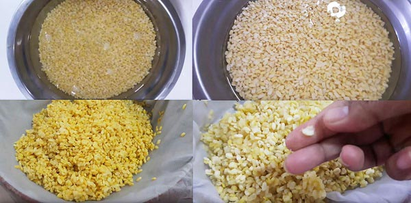
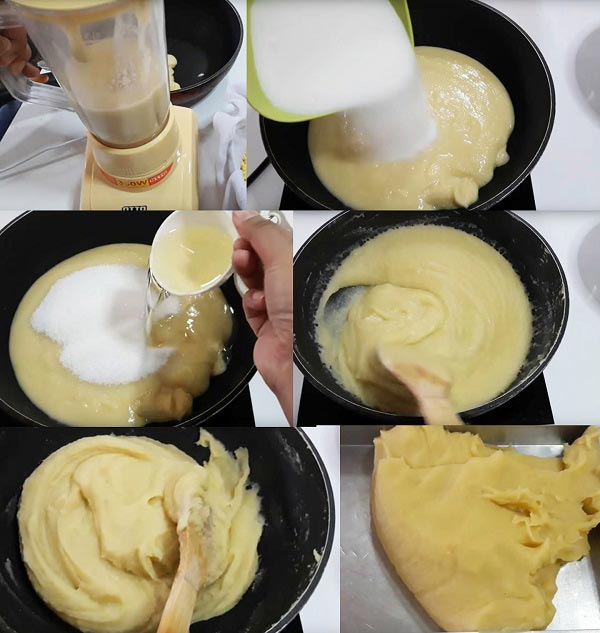
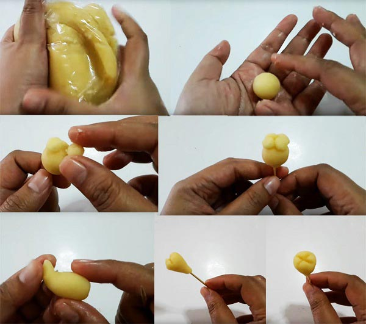
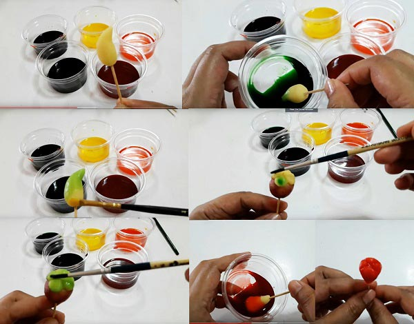
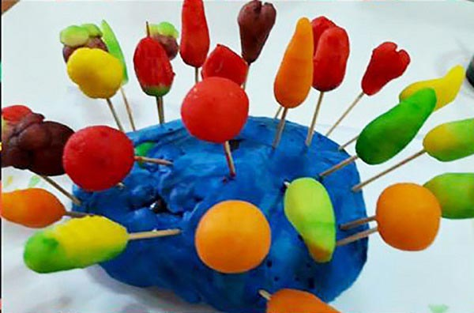
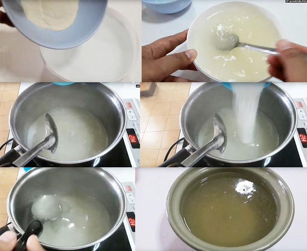
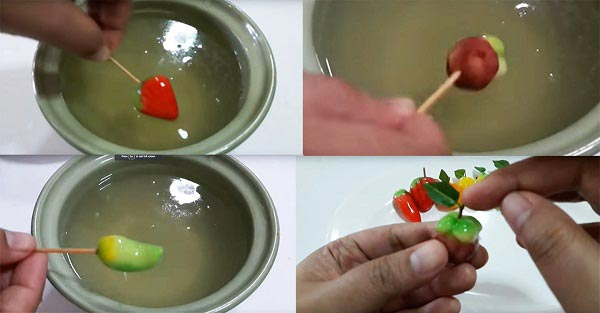
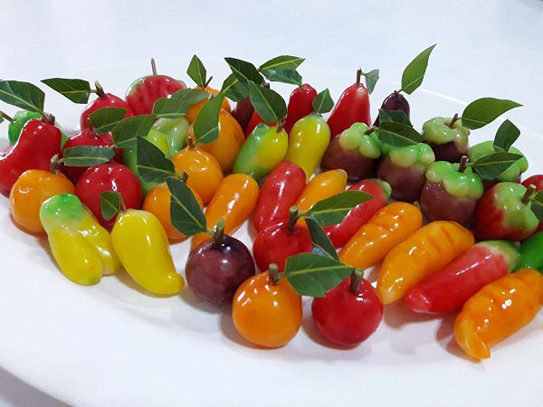
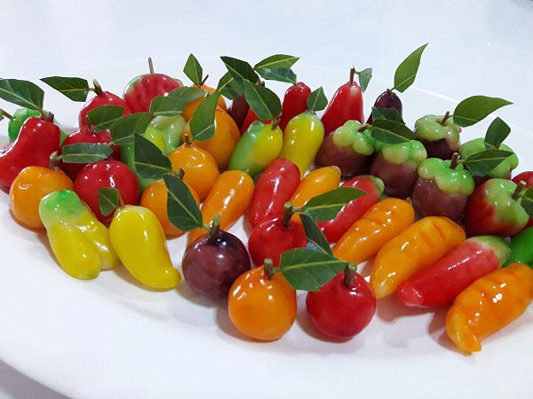

สวยจนไม่กล้ากิน พบกับเมนูลูกชุบ ขนมไทยที่คุ้นเคยในวัยเด็ก ปั้นถั่วกวนเป็นรูปต่าง ๆ เติมสีสันตามชอบ ชุบน้ำวุ้นกรอบอร่อย ใครมาขอแบ่งก็ไม่ยอม

ทำลูกชุบง่าย ๆ วัตถุดิบไม่กี่อย่าง ชวนลูกชวนหลานมาทำทานกันค่ะ โดย >ครัวป้ามารายห์
ส่วนผสม ลูกชุบ
• ผงวุ้น 2 ช้อนโต๊ะ
• น้ำ 500 กรัม
• น้ำตาลทราย 3 ช้อนโต๊ะ
• สีผสมอาหารสีเหลือง สีแดง สีเขียว สีส้ม และสีม่วง (ใช้สีแดง 10 หยด+สีน้ำเงิน 2 หยด)
หมายเหตุ : สัดส่วนการผสมสีใช้น้ำเปล่า 3 ช้อนโต๊ะ ต่อสี 10-15 หยด
ส่วนผสม ถั่วกวน
• ถั่วเขียวเราะเปลือก 500 กรัม
• น้ำตาลทราย 450 กรัม
• น้ำมันพืช หรือกะทิ 1 ถ้วยตวง
• เกลือ 1/2 ช้อนชา
วิธีทำลูกชุบ

• ล้างถั่วเขียวเราะเปลือกให้สะอาด ล้างหลาย ๆ รอบจนน้ำใส หลังจากนั้นแช่น้ำทิ้งไว้อย่างต่ำ 5 ชั่วโมง หรือใครจะเอาไปแช่ตู้เย็นเลยก็ได้ค่ะ บ้านเราอากาศค่อนข้างร้อน ถั่วอาจจะเสียง่าย หลังจากนั้นนำถั่วมาล้างอีกสักรอบแล้วนำไปนึ่ง ใช้เวลาประมาณ 30 นาที พอนึ่งเสร็จแล้วก็พักให้เย็นค่ะ
• นำถั่วที่เย็นแล้วมาปั่นกับน้ำพอประมาณ แต่อย่าน้อยเกินไปนะคะ เดี๋ยวถั่วหนืดไปเครื่องปั่นจะทำงานหนักและไหม้ พอปั่นเสร็จหมดแล้วก็เทใส่หม้อทองเหลืองหรือกระทะเทฟลอน ใส่น้ำตาลทราย น้ำมันพืชหรือกะทิ และเกลือ คนให้พอเข้ากันแล้วนำไปตั้งไฟค่ะ กวนด้วยไฟอ่อนจนถั่วร่อนไม่ติดกระทะ พอกวนเสร็จก็พักไว้ใช้ผ้าคลุมไว้เพื่อไม่ให้ถั่วแห้ง

• พอถั่วเย็นแล้วก็เอามาใส่ถุงแล้วนวดอีกครั้งเพื่อให้ถั่วเนียนและสีใสไม่ขุ่น ปั้นเป็นผลไม้หรือสัตว์ต่าง ๆ ตามชอบเลยค่ะ

• นำถั่วกวนไปจุ่มสี และทาสี แล้วพักให้สีแห้งสนิท

• ผสมน้ำกับผงวุ้นพักไว้ 10 นาที พอครบเวลาก็นำมาต้มจนเดือด และผงวุ้นละลายหมด เติมน้ำตาลทรายลงไปต้มจนน้ำตาลทรายละลาย ปิดเตา พักพออุ่นหน่อยก่อนนำลูกชุบไปชุบนะคะ ไม่เช่นนั้นสีอาจจะหลุดเลอะเทอะค่ะ

• พอน้ำวุ้นอุ่นลงบ้างแล้วก็นำลูกชุบไปชุบ ชุบเสร็จก็พักไว้ให้เซตตัวแล้วนำมาชุบซ้ำ 3-4 ครั้ง แล้วแต่ชอบความหนาบางของวุ้นเลย แต่ถ้าวุ้นในชามเริ่มแข็งก็นำไปอุ่นได้ค่ะ ชุบเสร็จหมดแล้วก็พักจนเซตตัว ตกแต่งโดยการใส่ใบแก้ว หรือใบมะยมก็ได้ค่ะ



• เสร็จแล้วค่ะ ไม่ยากเลยใช่ไหมคะ